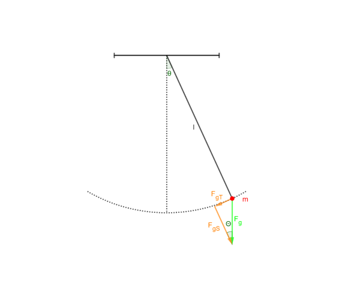
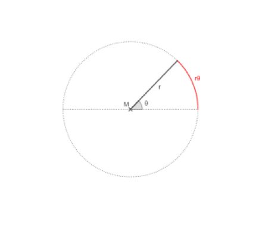

Zunächst wollen wir die auf den Massenpunkt wirkende Kraft \(F_g\) in eine Komponente tangential und senkrecht zur Bewegungslinie des Massenpunktes unterteilen:

Die Gewichtskraft wurde in die beiden Komponenten zerlegt
Da der Winkel im kleinen Kräftedreieck gleich dem Auslenkwinkel \(\theta\) ist, ergibt sich für die beiden Teilkräfte der folgende Zusammenhang:
$$ F_{gT} = F_gsin(\theta) $$ und $$ F_{gS} = F_gcos(\theta) $$
Die Kraft \(F_{gT}\) verursacht hierbei die Bewegung des Massenpunktes. Damit können wir nach dem 2. Newtonschen Gesetz die Gleichung $$ ma = - mgsin(\theta) $$ wobei \(F_g = mg\) ist (das Minuszeichen lässt sich dadurch erklären, dass \(F_{gT}\) der Bewegungsrichtung des Massenpunktes stets entgegengerichtet ist).
Das Ziel bleibt weiterhin eine Bewegungsgleichung für die Bewegung des Massenpunktes zu finden. Daher wollen wir die Beschleunigung a als zweite ableitung des Ortes nach der Zeit auffassen:
\(a = \frac{d^2x}{dt^2}\). Damit ergibt sich für den obigen Zusammenhang: $$ \frac{d^2x}{dt^2} = - gsin(\theta) $$
Wobei wir \(x\) in diesem Fall als die Strecke, um die der Massenpunkt ausgelenkt wurde auffassen können (Siehe die gestrichelte Bahnkurve in der Skizze, auf welcher sich der Massenpunkt bewegt).
Man kann diese Strecke in Abbhängigkeit des Winkels \(\theta\) ausdrücken:

Kreisbogen in Abhängigkeit von Radius und Winkel
Die rot markierte Strecke lässt sich als \(r\theta\) ausdrücken. Bezogen auf das Federpendel bedeutet dies, dass wir die Auslenkung \(x\) als \(x = l\theta\) auffassen.
Eingesetzt in die obige Bewegungsgleichung erhält man: $$ \frac{d\theta^2}{dt^2} = - \frac{g}{l}sin(\theta) $$
An dieser Stelle möchten wir die folgende vereinfachte Annahme treffen: Für kleine Winkel \(\theta\) gilt \(\theta \approx sin(\theta)\).
Damit erhalten wir für unsere Bewegungsgleichung: $$ \frac{d\theta^2}{dt^2} = - \frac{g}{l}\theta $$
Die Form dieser Gleichung errinert an die allgemeine Form des harmonischen Oszillators: \(\frac{d^2x}{dt^2} = - \omega^2x(t)\). Wir erhalten also die allgemeine Lösung
$$ \theta(t) = \theta_{max}sin(\omega t + \phi_0) $$ wobei \(\theta_{max}\) die maximale Auslenkung des Fadenpendels ist.
Durch Abgleichen erhalten wir die Gleichung: \(\omega^2 = \frac{g}{l}\) bzw. \(\omega = \sqrt{\frac gl}\) und mit dem Zusammenhang \(\omega = \frac{2\pi}{T}\) erhält man eine Gleichung für die Schwingungsdauer \(T\) des Pendels:
$$ T = 2\pi\sqrt{\frac lg} $$
Wir können also die Schwingungsdauer allein aus der Länge des Fadenpendels und der Größe des Ortsfaktors berechnen!
Insgesamt haben wir also eine Bewegungsgleichung gefunden, welche uns die Position des Massenpunktes (über den Winkel \(\theta\)) in Abhängigkeit der Zeit angibt.